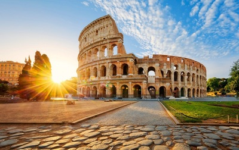
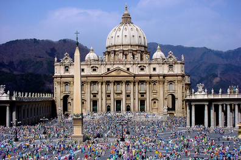
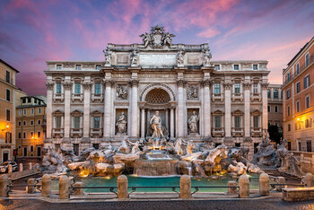
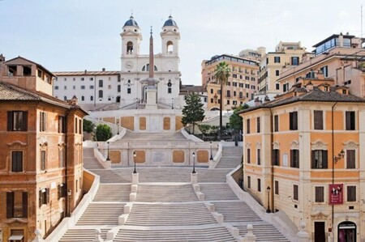
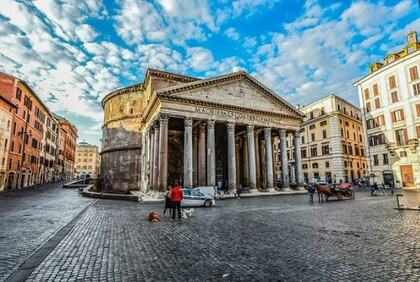
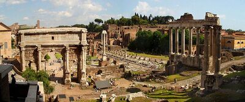
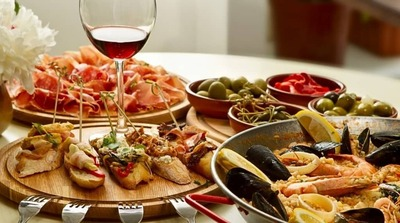
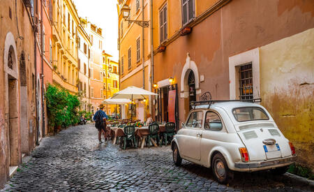

10 причин побачити Рим
Рим – це місто, яке вражає з першого погляду. Його велична архітектура, унікальна атмосфера та тисячолітня історія приваблюють мандрівників з усього світу. Якщо ви ще не відвідали столицю Італії, ось десять причин, чому варто це зробити.
-
Колізей – подорож у минуле
Один із найвідоміших символів Риму – Колізей. Це місце, де тисячі років тому відбувалися грандіозні гладіаторські бої. Сьогодні ви можете прогулятися його арками, уявляючи, як тут вирувало життя в давнину.
 -
Ватикан і велич собору Святого Петра
Рим – це не лише місто, а й осередок католицького світу. Ватикан вражає своєю архітектурою, мистецькими шедеврами i грандіозним собором Святого Петра. Тут можна побачити легендарну Сикстинську капелу з розписами Мікеланджело.
 -
Фонтан Треві – місце бажань
За легендою, якщо кинути монетку у фонтан Треві, обов’язково повернешся до Риму. Цей розкішний бароковий фонтан є одним із найкрасивіших у світі. Ввечері, під мерехтіння ліхтарів, він виглядає особливо чарівно.
 -
Іспанські сходи – куточок романтики
Іспанські сходи – одне з найвідоміших місць для зустрічей у Римі. Вони приваблюють туристів своєю елегантною архітектурою та чудовим видом на місто. Весною сходи вкриваються квітами, створюючи казкову атмосферу.
 -
Пантеон – храм, що пережив віки
Одна з найкраще збережених пам’яток античного Риму – Пантеон. Його купол із круглим отвором у центрі досі вражає своєю архітектурною досконалістю. Усередині панує особлива атмосфера величі та спокою.
 -
Давньоримські форуми
Римські форуми – це серце стародавнього Риму. Тут проходили політичні та громадські зібрання, приймалися важливі рішення. Сьогодні це розкопки, які дають змогу уявити велич колишньої імперії.
 -
Справжня італійська кухня
Жодна подорож до Риму не обходиться без смачної їжі. Тут можна скуштувати справжню римську піцу, пасту карбонара чи класичний тірамісу. А чашка ароматного еспресо на маленькій площі зробить день незабутнім.
 -
Вулички Трастевере
Район Трастевере – це справжній лабіринт затишних вуличок, прикрашених виноградною лозою. Тут панує неповторний колорит Риму, де можна насолодитися живою музикою та спробувати традиційну кухню в сімейних ресторанчиках.
 -
Закат над Римом
Рим особливо гарний на заході сонця. Найкраще місце для цього – пагорб Джаніколо або площа П’яцца дель Кампідольйо. Коли сонце сідає за античні руїни, місто наповнюється магічним золотистим світлом.
-
Відчуття вічності
Рим – це більше, ніж просто місто. Це місце, де історія переплітається із сучасністю, де кожна вулиця приховує свою таємницю. Відвідавши Рим одного разу, ви зрозумієте, що це місто дійсно вічне.
Експерименти
Експерименти з властивістю font-style
-
Ой у лузі червона калина похилилася
Чогось наша славна Україна зажурилася -
Ой у лузі червона калина похилилася
Чогось наша славна Україна зажурилася -
Ой у лузі червона калина похилилася
Чогось наша славна Україна зажурилася
Експерименти з властивістю text-decoration
-
Ой у лузі червона калина похилилася
Чогось наша славна Україна зажурилася -
Ой у лузі червона калина похилилася
Чогось наша славна Україна зажурилася -
Ой у лузі червона калина похилилася
Чогось наша славна Україна зажурилася
Фрагмент блоку з макету Ecobazar
Maecenas lacinia felis nec placerat sollicitudin. Quisque placerat dolor at scelerisque imperdiet. Phasellus tristique felis dolor.
Maecenas elementum in risus sed condimentum. Duis convallis ante ac tempus maximus. Fusce malesuada sed velit ut dictum. Morbi faucibus vitae orci at euismod. Integer auctor augue in erat vehicula, quis fermentum ex finibus.
Mauris pretium elit a dui pulvinar, in ornare sapien euismod. Nullam interdum nisl ante, id feugiat quam euismod commodo. Sed ultrices lectus ut iaculis rhoncus. Aenean non dignissim justo, at fermentum turpis. Sed molestie, ligula ut molestie ultrices, tellus ligula viverra neque, malesuada consectetur diam sapien volutpat risus. Quisque eget tortor lobortis, facilisis metus eu, elementum est. Nunc sit amet erat quis ex convallis suscipit. ur ridiculus mus.